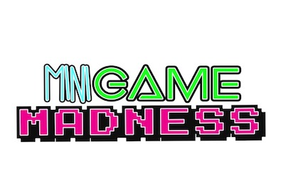

Minigame Madness
HackGSU - Spring 2016

Inpiration
We were inspired to create this by the Stay Inside and Play and the Gene Challenge. After we had started
creating MiniGame Madness, we further got inspired by the creation of the Best Design Category. The game Chimp
Chase was inspired by MailChimp.
What it does
MiniGame Madness is an app that hosts 3 different mini-games that the user can play. They are Chimp Chase,
Labyrinth, and Dance Floor Dodge.
How we built it
We build MiniGame Madness using the Unity3D game engine and their built in collaboration tools.